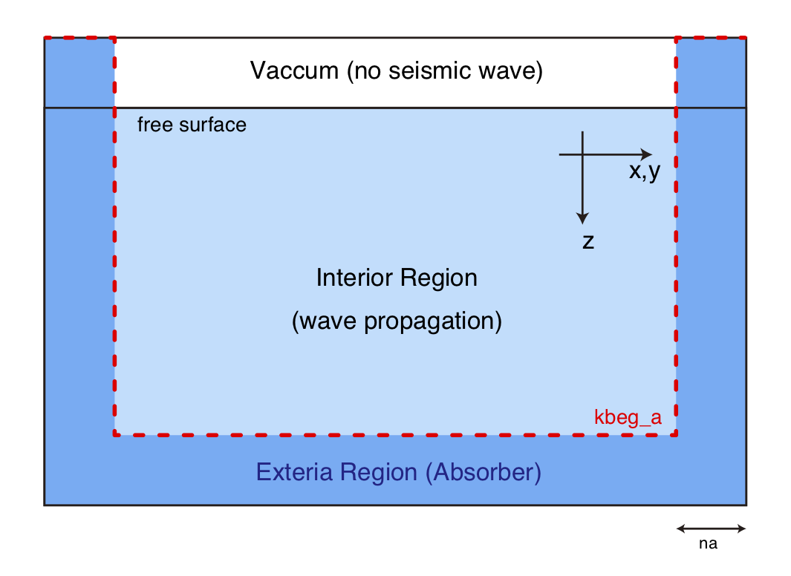

Absorbing Boundary Conditions¶
Users can choose an absorbing boundary condition from the auxiliary differential equation, the complex frequency-shifted perfectly matched layer (ADE CFS-PML; Zhang et al., 20101）, and Cerjan's sponge condition (Cerjan et al., 19852).0
The entire computational domain is separated into interior and exterior
regions by the thickness of the absorber na, as shown in the following figure.
Figure

Schematic of the definition of the absorber region. The red dotted line indicates the location of kbeg_a(I,J).
Because this program assumes the existence of a free surface and ignores acoustic waves in the air
column, the waves in the top boundary will not be absorbed. At a given
horizontal grid location (I,J), the depth grid deeper than kbeg_a
will be used as the attenuator.
For computational efficiency in the PML boundary condition, OpenSWPC
does not solve the viscoelastic constitutive equation in the absorber.
Note that, in the case of a medium having very small values, this
may lead to a velocity gap between the interior and exterior regions due
to physical dispersion.
For Cerjan's absorbing condition, the parameters suggested by
[@Cerjan:1985uz] are embedded in the source code. However, these
parameters are scaled according to the width of the absorber na.
The PML absorber is usually superior to the Cerjan's sponge condition in its efficiency in avoiding artificial reflection from the boundaries. However, PML occasionally results in numerical instabilities, particularly for a medium with a strong velocity contrast and after several time steps. In case if such instability occurs, the following empirical remedies might work:
- Slightly change the computational area by changing
clonandclat, ornxandny - Eliminate very-low velocity layers in the absorber region by setting
stabilize_pml = .true. - Elongate the rise time of the source time function to reduce high-frequency wave components.
The Cerjan's sponge always gives a very stable result.
Parameters
abc_type- Type of the absorbing boundary condition. Choose from
’pml’or’cerjan’. na- Thickness of the absorbing layer in numbers of grids. Usually, 10-20 grids are chosen.
stabilize_pml- The low velocity layer is removed if this flag is
.true., to stabilize PML. This option may increase the amplitude or artificial reflection as a side effect.
Caution
The fullspace_mode implemented in Version 5.0 -- 5.1 has been temporarily disabled because it was found to cause trouble in certain environments even when the mode was not set. The cause of the trouble is being investigated.
-
Zhang, W., and Y. Shen (2010), Unsplit complex frequency-shifted PML implementation using auxiliary differential equations for seismic wave modeling, Geophysics, 75(4), T141–T154, doi:10.1190/1.3463431. ↩
-
Cerjan, C., D. Kosloff, R. Kosloff, and M. Reshef (1985), A nonreflecting boundary condition for discrete acoustic and elastic wave equations, Geophysics, 50(4), 705–708. ↩